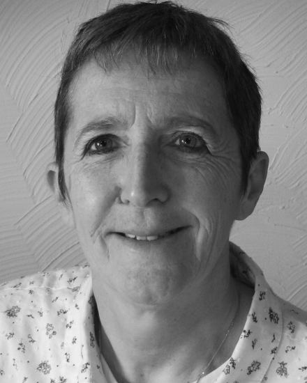

Retourner à l'acceuil
Partie 1: sa vie
Études
Jocelyne Troccaz est une chercheuse en informatique française née le 11 juin 1979. Tout au long de sa vie, elle a travaillée dans l'imagerie et la robotique médicale. Au niveau des études, elle obtient son baccalauréat scientifique en 1976, puis un diplôme d'études universitaires générales en maths-physique. Ensuite elle décroche sa license d'informatique en 1980et finie par diriger en 1993 les recherches à l'Institut National Polytechnique de Grenoble, dans la spécialité "Informatique et mathématiques appliquées".
.Carrière
 Tous ses diplômes en poche, Jocelyne Troccaz finit par entrer au CNRS,
où elle y deviendra directrice de recherche en 1998.
Elle y est principalement chercheuse en robotique médicale, et ses travaux ont pu prouver au monde entier que la robotique
pouvait se mettre au service des chirurgiens pour mieux soigner. En même temps, elle enseigne à l'université de Grenoble, devient
directrice adjointe du laboratoire TIMC-IMAG (réalisant de la recherche translationnelle en santé) et, pareillement, obtient le statut
de directrice de recherche CNRS de classe exceptionnelle depuis octobre 2017. Elle se voit recevoir la médaille d'argent du CNRS en 2015.
Tous ses diplômes en poche, Jocelyne Troccaz finit par entrer au CNRS,
où elle y deviendra directrice de recherche en 1998.
Elle y est principalement chercheuse en robotique médicale, et ses travaux ont pu prouver au monde entier que la robotique
pouvait se mettre au service des chirurgiens pour mieux soigner. En même temps, elle enseigne à l'université de Grenoble, devient
directrice adjointe du laboratoire TIMC-IMAG (réalisant de la recherche translationnelle en santé) et, pareillement, obtient le statut
de directrice de recherche CNRS de classe exceptionnelle depuis octobre 2017. Elle se voit recevoir la médaille d'argent du CNRS en 2015.